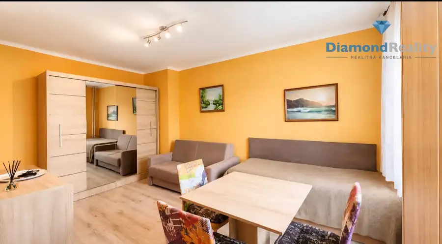
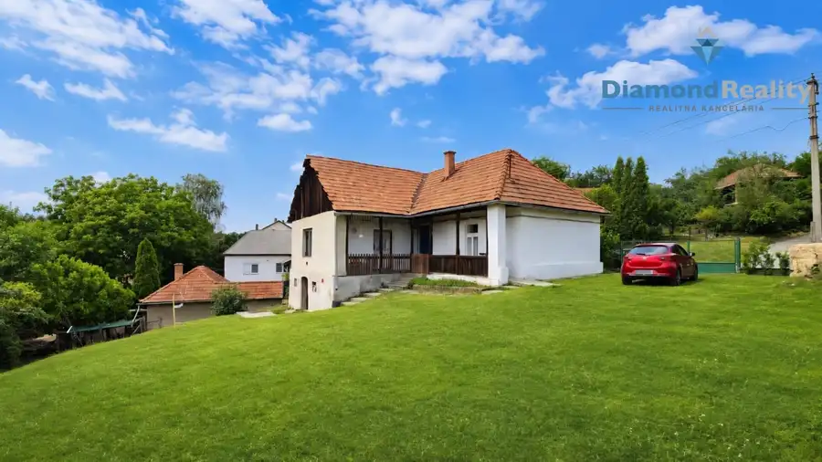
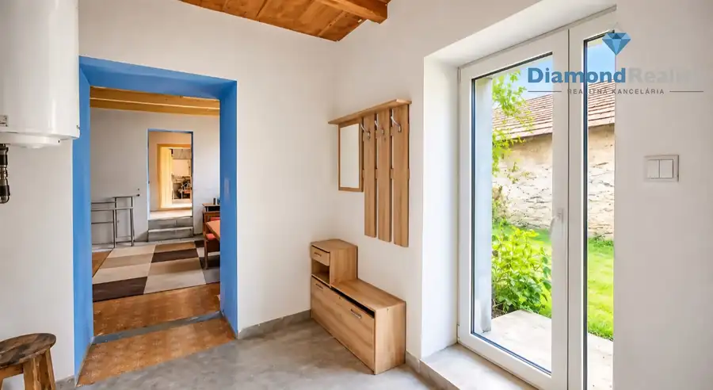

3800 m2 - PRENÁJOM skladov
Nad jazerom, Košice
- Plocha3842 m²
- StavPôvodný stav
- VlastníctvoOsobné
O nehnuteľnosti
Diamond reality v spolupráci s Kristínou Benöczovou Vám ponúkajú na prenájom nebytové a skladové priestory na sídlisku nad Jazerom priamo v špičke dopravného uzla, a to nasledovne: SKLADY JE MOŽNÉ PRENAJAŤ AJ SAMOSTATNE 1. Trakt/sklad H1 o výmere 996,87m² (z toho sklad H1 o výmere 922,43m², kancelárie a soc. zázemie o výmere 74,44m²). (kancelárie a soc. zázemie vykurované)2. Trakt/sklad H1 kancelárie 1. nadzemné podlažie o výmere 70,82m² (vykurované).3. Trakt/sklad H2 o výmere 424,80m² (bez vykurovania).4. Trakt/sklad H3 o výmere 413,36m² (bez vykurovania).5. Trakt/sklad H3.1 o výmere 270,77m² (bez vykurovania).6. Trakt/sklad H3.2 o výmere 400,39m² (bez vykurovania).7. Trakt/sklad H4 o výmere 416,46m² (bez vykurovania).8. Trakt/sklad H5 o výmere 849m² (z toho sklad H5 o výmere 759,40m² a kancelárie, soc. zázemia na prízemí a na prvom nadzemnom podlaží o výmere 89,63m²). (bez vykurovania)Spolu výmera : ............................... 3842,47m². Pre všetky sklady/ trakty a kancelárie uvedené vyššie:Nájomné: 44,40€ bez DPH/m²/ rok, t.j. 3,70€ bez DPH/m²/mesiac.PS (prevádzkové služby) 0,50€ bez DPH/m²/mesačne.+Elektrina: podľa stavu merača.Voda: podľa stavu merača.Plyn: podľa stavu merača (plynový kotol - vlastníctvo súčasného nájomcu, vykuruje kancelárie a soc. zázemie v priestore H1) Popis:Skladové priestory/trakty a kanc. pod označením H1, H2, H3, H4, H3.1, sú aktuálne užívané spoločnosťou na skladovanie a prekládku tovarov. Z toho priestor H3.1, ako servis s montážnou jamou pre vozidlá tohto nájomcu. Tieto priestory je možné uvoľniť do 15 dní.Skladové priestory/trakty H5, H3.2 sú voľné ihneď.Kancelárske priestory a sociálne zázemie sú v:H1 ( Prízemie: kancelárie-3X, WC-2X, sprcha-1X, šatňa-2X; 1. nadzemné podlažie: kancelárie-3X, všetko vykurované)H4 ( Prízemie: kancelária-1X, WC-1X, sprcha-1X, všetko bez vykurovania)H5 ( Prízemie: kancelária-1X, WC-1X, sprcha-1X, 1. nadzemné podlažie: šatňa-2X, WC-1X, sprcha-1X, všetko bez vykurovania). Priestory H3 a H4 tvoria jeden celok – priečka medzi nimi je zrušená. Povrch vo všetkých skladoch: betónová platňa pokrytá cca 3cm vrstvou asfaltu.Výška každého skladu: 5,6m.Výška brán odsúvaných: 3,6m, Výška brán dvojkrídlových: 3,6m.Šírka brán odsúvaných : 3,6m. Šírka brán dvojkrídlových: 3,3m. Skladové priestory je možné využiť na skladovanie, rôzneho tovaru, prekládky tovaru, servis, servis nákladných vozidiel, výrobu s logistikou prípadne iné priemyselné využitie. V prípade záujmu o obhliadku ma prosím kontaktujte: benoczova@diamondreality.sk+421 910 393 229
Parametre
| Druh | Skladový objekt |
|---|---|
| Dátum zverejnenia | 28. 10. 2025 |
| Energetický certifikát budovy | nie je |
| Stav nehnuteľnosti | Pôvodný stav |
| Typ | Prenájom |
| Vlastníctvo | Osobné |
| Zastavaná plocha | 3842 m² |
| Úžitková plocha | 3842 m² |
Kde to je


Mohlo by Vás zaujímať

BytNové10 69 990 €Investičná garsónka priamo v centre SNV- koceľova ul. Spišská Nová Ves 26 m²1. podlažie INVESTIČNÁ GARSÓNKA V SRDCI SPIŠSKEJ NOVEJ VSI | KOCEĽOVA | 26 m²Diamond Reality Benöczová s.r.o. vám exkluzívne ponúka na predaj garsónku o výmere…
DomNové10 33 330 €🌿 Bývanie v rozprávke – Domček Rudabánya Rudabánya 92 m² HĽADÁ SA NOVÝ MAJITEĽ DOMČEKA V SRDCI PRÍRODY 🌿 RudabányaDiamond Reality Benóczová s.r.o. vám exkluzívne ponúka na predaj čiastočne zrekonštruovaný…
DomNové10 23 500 €GÖNC - Maďarsko - Rodinný dom s 10 árovým pozemkom Gönc 120 m² Diamond Reality Benöczová s.r.o. vám exkluzívne ponúka na predaj rodinný dom s 10-árovým pozemkom v maďarskom meste Gönc. Nehnuteľnosť je vhodná pre…